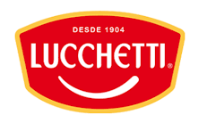
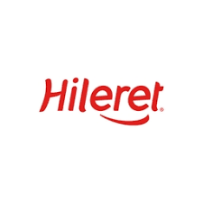

Algunos desafíos en los
que trabajé.
Lideré el lanzamiento de OLX en Latinoamérica, desarrollando la marca desde cero en múltiples países y armando el equipo regional (online y offline). Definí una estrategia de expansión flexible, combinando socios locales y equipos iniciales livianos hasta validar el modelo, para luego escalar con estructura propia. Gestioné una inversión en comunicación superior a USD 200M, logrando posicionar la marca en 11 países de la región y definiendo en cuáles de ellos el negocio continuaría.
Me desempeño como Fractional CMO, liderando de forma integral la estrategia y ejecución de marketing de la compañía. Trabajo en la definición y gestión del portafolio, desarrollo de productos y packs, estrategia de comunicación y coordinación del equipo de marketing. Acompaño el crecimiento del negocio alineando decisiones estratégicas con la implementación, asegurando foco, consistencia y avance en cada etapa.
Me incorporé a un equipo de marketing existente con fuerte foco operativo, pero sin una mirada estratégica clara ni un rumbo definido. Trabajé en la reorganización del equipo, definiendo prioridades y alineando roles. Implementé un sistema de indicadores clave, junto con la forma de analizarlos y presentarlos al comité de dirección. Desarrollé el plan estratégico de la marca a 5 años y acompañé al equipo en la ejecución, asegurando foco, consistencia y seguimiento.

Tomé una marca acotada a una categoría con pocos SKUs y lideré su transformación en una marca paraguas con presencia en múltiples categorías. Desarrollé una estrategia integral de posicionamiento, portafolio y comunicación, incluyendo la creación de una plataforma creativa distintiva.
Asesoré en la definición y ajuste de la propuesta de valor en una etapa clave de crecimiento. Trabajé junto al equipo en la construcción del posicionamiento y en la adaptación del mensaje a lo largo del customer journey.

Llevé a cabo el análisis estratégico para la expansión de la marca a nuevos mercados, identificando oportunidades y evaluando escenarios. Se definió Chile como mercado prioritario, donde se realizó un estudio profundo de consumidor y contexto competitivo.
La marca no contaba con un posicionamiento claro, lo que generaba inconsistencias en la comunicación y una identidad visual poco definida. Trabajé en la definición estratégica del posicionamiento y en la construcción de una identidad de marca coherente, alineando mensaje y expresión visual. Lideré el trabajo con las agencias y el equipo interno, asegurando consistencia en la implementación.
.png)
Acompañé a los socios en el diseño de una estrategia de comunicación masiva para acelerar el conocimiento de marca. Lideré el proceso de selección de agencias creativas y de medios, trabajando con partners de primer nivel como GUT y Midios. Coordiné el desarrollo de la propuesta creativa y la planificación de medios, asegurando coherencia entre estrategia, mensaje y ejecución. El proyecto se encontraba listo para implementación, aunque finalmente fue pausado por una decisión estratégica de la compañía.